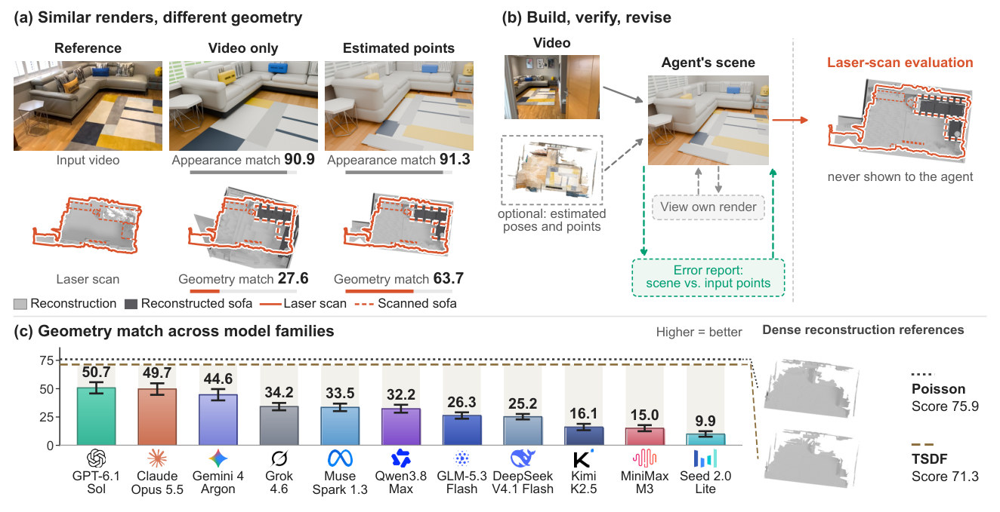
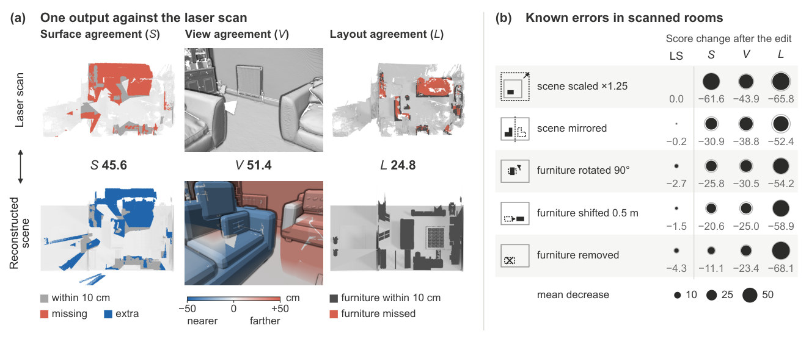
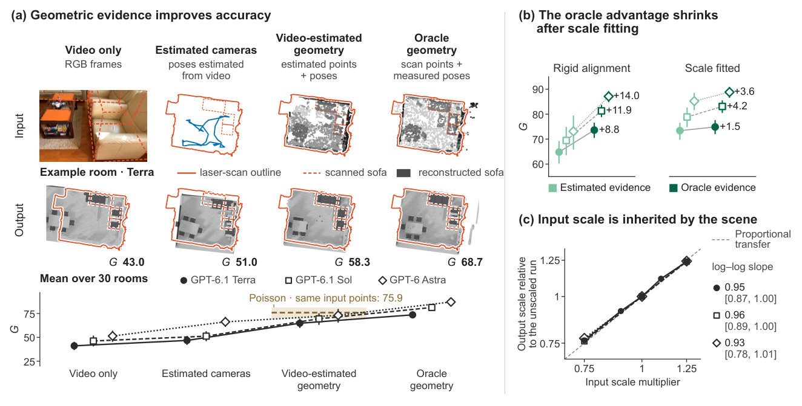
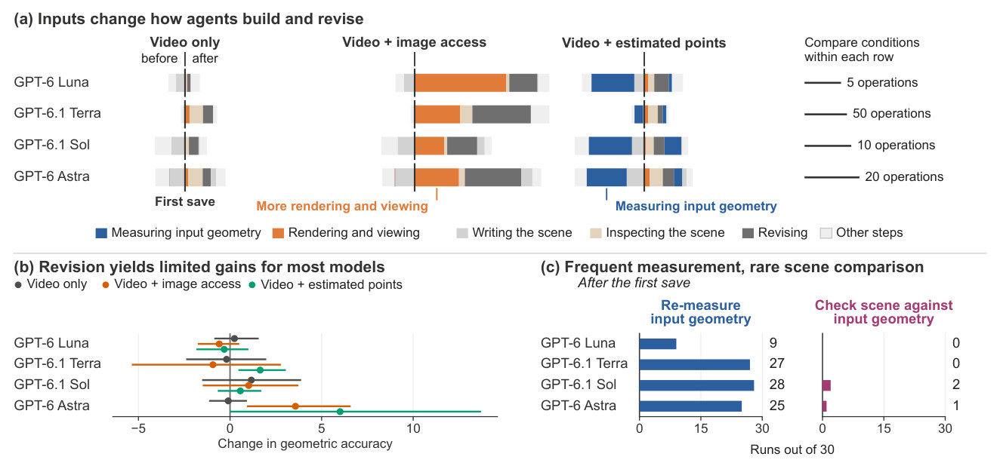
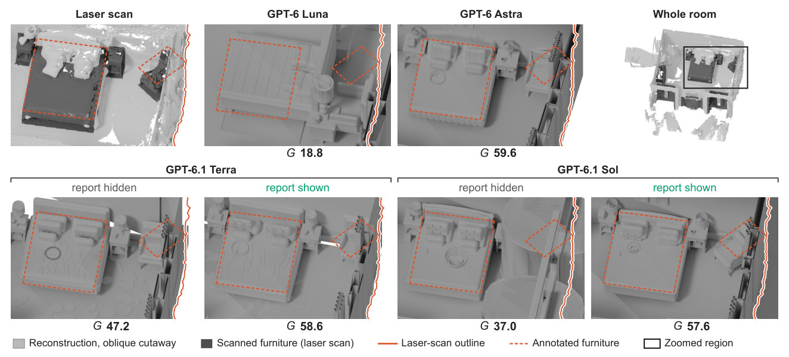
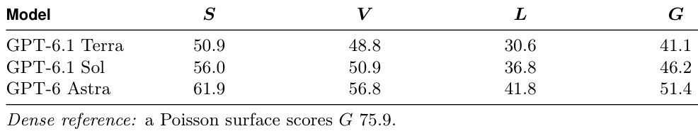
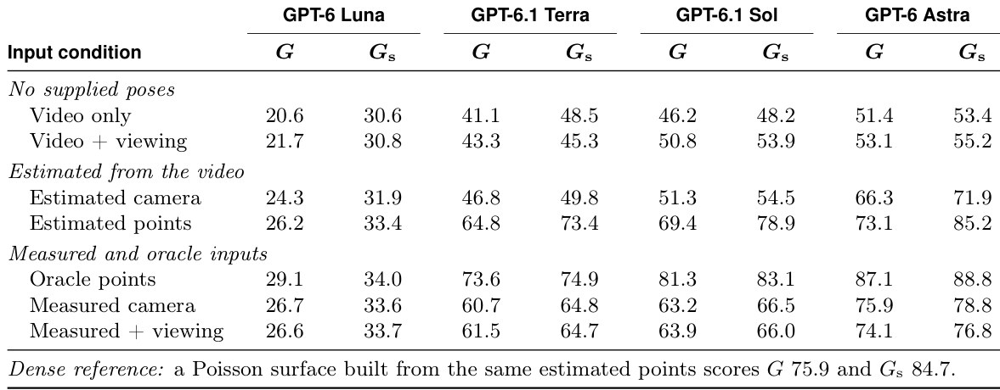
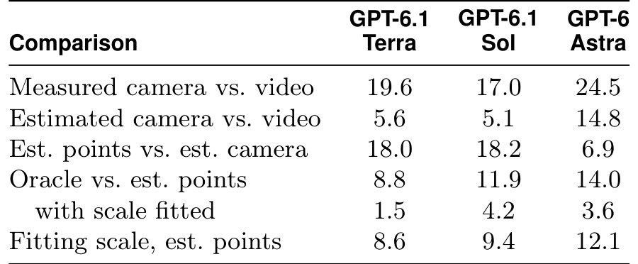
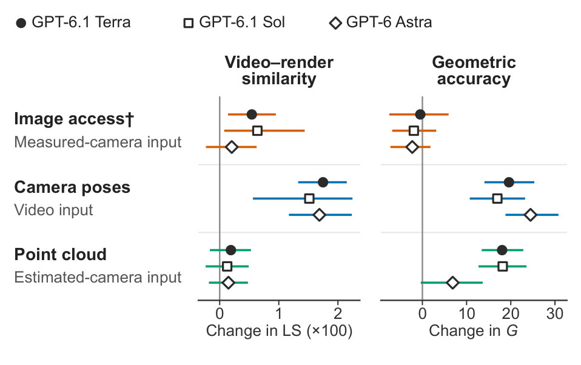
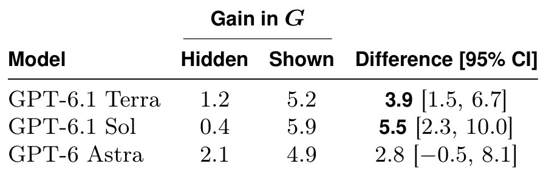

Agent-centric-real-to-sim · 归档于 2026-11-23
Looking Right
Looking Right Is Not Being Right: Evaluating the Geometry of Agent-Built 3D Scenes
arXivPDF Project pageGitHubData
arXiv comment 和 PDF 都把 Project 指向 GitHub 仓库 Albertlongzi/looking-right-being-right。2026-11-23 能打开，README 的标题就是这篇论文。仓库里只有交互 demo「Scene Fidelity」的网站源码（即上面的 Project page，放在 GitHub Pages）；评测代码和 agent harness 标着 release in preparation。Hugging Face 上目前只有一张项目卡片，还没有数据。
归档到 Agent-centric real-to-sim：评测 agent 从视频重建出的可编辑 Blender 房间，几何到底准不准（对照 30 个房间的激光扫描），以及 agent 会不会自己核对、修正；对 agent 自查行为的轨迹分析也贴近 LLM-Harness。
TL;DR
- Problem
- Agent 从视频写 Blender 程序重建房间，render 看着像，几何却可能差很多。现有评测（如 BVB）只比 render，看不出尺度错、家具摆错，也分不清错出在哪一步。
- Idea
- 拿 30 个 ARKitScenes 房间的激光扫描直接量几何：表面 S、逐视角深度 V、家具摆放 L，合成 G（0–100）。固定 harness、prompt 和预算，一次只改一个条件（给不给几何、能不能看 render、有没有 error report），再读 tool-call 日志，看 agent 怎么改、查不查。
- Result
- 只给视频，最强的 GPT-6 Astra 得 51.4，同一视频的 Poisson 稠密重建得 75.9（Tab. 2）。给了 DA3 点云，Astra 到 73.1，只差 2.8（Tab. 3），但输入的尺度错几乎原样继承（斜率 0.93–0.96，Fig. 3c）。看 render 主要改外观；第一次保存后，30 个 run 里至多 2 个拿场景对照输入（Fig. 5c）。Error report 让 Terra、Sol 的修改收益多 3.9、5.5 分（Tab. 6）。
Problem
Render 像不等于几何对：只比 render，看不出尺度和家具的错，也分不清错出在哪一步
Running example · 后面每个 stage 都跟着它走
客厅 · ARKitScenes 47204578（编号来自项目页；它的首帧和 Fig. 1a 的 Reference 是同一画面）：一段 RGB 走查视频，L 形灰沙发 · 彩色地毯 · 百叶窗。交给 GPT-6.1 Terra，它在 Blender sandbox 里用 primitives 写程序建房间；有的条件再给它 DA3 从同一视频估出的相机位姿和点云。激光扫描只用来打分，agent 看不到。
→ 想要：一个可编辑的 Blender 场景，墙、沙发、地毯的位置和尺寸都和激光扫描一致。在重建里塞得进沙发和墙之间的柜子，在真实客厅里也要塞得进（§1 的例子）。
flowchart LR IN["本例
客厅视频 → Terra"]:::example IN --> A1["Render 分
像不像视频"] A1 --> AX["一样像，几何差两倍
外观 90.9 vs 91.3
几何 27.6 vs 63.7"]:::gap IN --> B1["Render 分
尺度、镜像对不对"] B1 --> BX["连相机放大 1.25 倍
图不变
LS 变 0.0 · G −58.5"]:::gap IN --> C1["Render 分
错出在哪一步"] C1 --> CX["分不清猜错
还是转换时丢了
视频 41.1 · 给点 64.8
Poisson 75.9"]:::gap IN --> D1["Agent 看 render
自查再修改"] D1 --> DX["外观更像，几何不动
ΔG −0.5
对照输入 0/30"]:::gap
数字出处：第 1 条是本例客厅的两次 Terra 重建（只给视频 vs 加估计点云，Fig. 1a）。第 2 条来自三个 scan-derived 场景上的 known-error control（§3.1、Fig. 2b），不是本例。第 3、4 条是 Terra 在 30 个房间上的平均或计数：Tab. 2、Tab. 3、Tab. 5 的实测相机行（区间含 0）、Fig. 5c 的估计点 run。四条都不是推断：§1 原话就说 render 分 cannot tell「从视频猜错几何、建可编辑物体时丢了给的几何、没检查结果」这三类错，§3–6 逐一测了。
根本问题：render 只约束投到图像上的样子，整体缩放、镜像、家具挪位后图几乎不变；agent 自查也只看图，从不拿建好的场景对照手里的点云。 这篇的切入点：绕开 render，用激光扫描直接量几何（S · V · L → G）；固定 harness，一次只改一个条件，定位误差来自哪一步；最后在 harness 里加一份 scene-vs-input error report，替 agent 做那一步对照。
Related work
| 相关工作 | 解决什么 | 怎么解决 | 和本文的区别 |
|---|---|---|---|
| 同一问题 · 别的解法 | |||
| Render 相似度 benchmark BVB、BlenderWorld、4DCodeBench | 评测 agent 写场景程序重建视频或参考 | QA 保留率、render 与参考视频的相似度（LS）、视觉评判、任务检查 | 不量度量几何，放大 1.25 倍 LS 都不变 → 本文对照激光扫描打 G，并重打 BVB 公开的 2,000 多个重建 |
| 带几何真值的评测（本文属于这一类） LEGO-Bench、SceneActBench；Scan2CAD、SceneScript | 对照 3D 真值评重建 | 单图可见表面（LEGO-Bench）；隐藏真值评多视角家具（SceneActBench）；对 3D 标注（Scan2CAD、SceneScript） | 单图、只评家具，或不是通用 agent → 本文用整间房的激光扫描，同时量可见表面、家具摆放和度量尺度，还控制输入和反馈 |
| 相似做法 · 别的问题 | |||
| 看 render 的视觉反馈 SceneCraft、BlenderAlchemy | 迭代改进场景程序 | VLM 看渲染图，找出差别再改代码 | 默认看图就能改好几何 → 本文在配对 run 里单独开关看图：外观变像，几何不涨 |
| 残差、回滚与程序化检查 LEGO-Anything、SceneRig、Code4Scene | 单图重建的修正；场景状态修复、物理有效性 | 图像残差 + 回滚（LEGO-Anything，并记录了倒退式编辑和不可靠的自评）；程序化评测（SceneRig、Code4Scene） | 证据来自图像或物理规则 → 本文的 error report 拿场景对照 agent 自己的点云，不加新证据 |
| 激光真值的重建指标 Tanks and Temples、ScanNet++；输入来自 DUSt3R、VGGT、DA3 | 多视角重建的精度 | 对激光扫描算 precision / recall / F-score；feed-forward 模型从图像估相机和点 | 默认坐标系和尺度固定 → 本文加刚体、缩放两种配准，区分尺度错和摆放错，再加家具摆放项 L |
来源：论文 §1、§2 Related Work，未另行检索。SceneRig 在 library 里有页面，本文只在 §2 把它列为程序化检查，没有数字对比。BVB 的公开重建在 §4 和 Fig. 1c 里被重新打分（最好的 Sol、Astra 配置 G 50.7、49.5）。
Level 1 · Big picture
Agent 照常从视频建场景，打分时才拿出激光扫描量几何；一次只改一个条件，看分数从哪来

怎么读这张图
- (a) Similar renders, different geometry，上排：Reference 是本例输入视频的一帧；Video only、Estimated points 是 Terra 两次重建的 render。Appearance match（render 和视频比，0–100）是 90.9 和 91.3，几乎一样。
- (a) 下排俯视图：浅灰 Reconstruction，深灰 Reconstructed sofa，红实线 Laser scan 轮廓，红虚线 Scanned sofa。Video only 的灰色地面斜着伸出红线一大块，Geometry match 27.6；Estimated points 基本落在红线里，63.7。
- (b) Build, verify, revise：Video（加虚线框里可选的 estimated poses and points）→ Agent's scene。两条虚线是可选的检查：灰色 View own render（Stage 5），绿色 Error report: scene vs. input points（Stage 6）。右边 Laser-scan evaluation 标着 never shown to the agent。
- (c) Geometry match across model families：误差线是 95% 区间。GPT-6.1 Sol 50.7、Claude Opus 5.5 49.7、Gemini 4 Argon 44.6，最低的 Seed 2.0 Lite 9.9。两条横线是同一视频估出的点做的稠密参考：Poisson 75.9（点线）、TSDF 71.3（虚线），没有一家够得着。
项目页的 Geometry benchmark 比论文新：多了论文里没有的 GPT-6.2 Astra、GPT-6.2 Sol 和 Claude Fable 5.2（只给视频，用本文的 harness）。它们的分数不在论文里，本页不引用，见项目页。
flowchart LR I["Input
客厅视频 ± DA3 点云"] --> A["Agent 建场景
Terra 写 Blender"] A --> E["激光扫描打分 G
视频 27.6 · 加点 63.7"]:::win K["一次只改一个条件
几何 · 看图 · 报告"]:::win K -.-> A
Level 2 · Stages
6 个 stage：先造尺子，再改输入，最后看自查
flowchart TD S1["1 · 几何打分 G
本例 27.6 / 63.7"]:::win S1 --> S2["2 · 只给视频
本例 27.6 · 均值 41.1"] S2 --> S3["3 · 加几何输入
本例 63.7 · 均值 64.8"] S3 --> S4["4 · 缩放输入
Terra 斜率 0.95"] S3 --> S5["5 · 自查与修改
Terra 对照输入 0/30"] S5 --> S6["6 · Error report
卧室 隐藏 47.2 · 显示 58.6"]:::win click S1 href "#stage-1" click S2 href "#stage-2" click S3 href "#stage-3" click S4 href "#stage-4" click S5 href "#stage-5" click S6 href "#stage-6"
点击 stage 展开 Level 3 细节。Stage 1 的 G 用在后面每一个实验里；Stage 2–6 用同一个 harness、prompt 和预算，每次只改一个条件（下表）。绿框是论文自己加的东西。
| 条件 | Agent 额外拿到什么 | 用在 |
|---|---|---|
| No supplied poses | ||
| Video only | 无，只有 RGB 视频 | Stage 2 |
| Video + viewing | 能看自己的 render | Stage 5 |
| Estimated from the video（DA3） | ||
| Estimated camera | 估计的相机位姿 | Stage 3 |
| Estimated points | 估计的位姿 + 3D 点 | Stage 3、5、6 |
| Rescaled points | 位姿和点一起缩放 0.75–1.25 倍 | Stage 4 |
| Measured and oracle inputs | ||
| Oracle points | 激光深度点 + ARKit 位姿 | Stage 3 |
| Measured camera | ARKit 位姿 | Stage 3 |
| Measured + viewing | ARKit 位姿 + 看 render | Stage 5 |
Table 1 按作者原表转录，「用在」一列是我加的。所有条件都拿同一段 RGB 视频；oracle 一次换掉点和位姿；缩放时点和位姿一起变。
Level 3 · Details
每个 stage 的细节
Stage 1 几何打分 G（scan-referenced score） agent 存下的 Blender 场景 + 同一房间的激光扫描 → G（0–100）
- Why：render 相似度对整体缩放、镜像、家具挪位几乎不变（Fig. 2b），只能绕开 render 直接量几何。
- How：
- 配准：场景和扫描的坐标系不同。拟合一个 gravity-aligned 刚体变换，保留相对位置、度量尺度和左右手性 → G；允许统一缩放 → Gs；给了相机时直接在相机坐标系里打分、不拟合 → Gdirect。
- 两种拟合都最小化 truncated symmetric Chamfer 距离，而不是最大化 G，所以 Gs − G 只是尺度误差的诊断，不是精确分解。
- 范围：只在激光扫描有有效深度、且在房间内的区域算；场景缺的面算失败。
- 表面一致度（S）：重建表面和扫描都按 2 cm 体素化，取 5、10、20 cm 三个阈值的 F-score 平均：缺面和多面都扣分。
- 视角深度一致度（V）：逐视角深度在 10 cm 内的准确率，加上深度边界的 F-score；反光区域用 SAM3 检出后排除。
- 家具摆放一致度（L）：标注家具框里的扫描表面，对场景里墙地顶以外的表面，算 10 cm F-score。家具单独算，免得大面积的墙和地盖过摆放错误。
- 合成：每项除以真实扫描自己的分数（扫描 = 1），封顶 1；G = 100 · ∛(S · V · L)。用几何平均，三项都好才高。
- Known-error control：在三个由扫描生成的场景上做五种已知编辑，比较 G 和 render 相似度 LS 的反应。
flowchart LR a["配准
刚体 · 缩放 · 直接"] --> b["三项打分
S · V · L"] b --> c["归一化 + 几何平均
G = 100·∛(SVL)"]
符号表
| 符号 | 白话 | 例子里的值 |
|---|---|---|
| S | 表面一致度：重建出的面和扫描的面重合多少 | Fig. 2a 的 Terra 场景 45.6；Terra 平均 50.9 |
| V | 视角深度一致度：从每个相机看出去，深度对不对 | 51.4；Terra 平均 48.8 |
| L | 家具摆放一致度：扫描到家具的地方，场景里有没有东西 | 24.8；Terra 平均 30.6 |
| G | 几何总分：三项几何平均再 × 100，0–100 | Fig. 2a 场景 38.7；本例客厅的 Geometry match 27.6 |
| Gs | 允许统一缩放后再配准的 G；比 G 高出多少，反映尺度错多少 | Terra 平均 48.5（G 41.1） |
| Gdirect | 不配准，直接放在给定相机的坐标系里打分 | 「看 render」实验用（Tab. 5） |
| LS | BVB 的 latent similarity：render 视频和参考视频在特征空间有多像，0–1（图里 ×100） | 放大 1.25 倍时变化 0.0 |
| F-score | 精度（场景的面有多少挨着扫描）和召回（扫描的面有多少被场景盖住）的调和平均 | S 取 5、10、20 cm 三个阈值平均 |

怎么读这张图
- (a) One output against the laser scan：一个只给视频的 Terra 场景（G = 38.7，不是本例客厅），刚体配准后和扫描对比。上排 Laser scan，下排 Reconstructed scene。
- Surface agreement (S) 45.6：灰色 within 10 cm；红色 missing（扫描有、场景没有）；蓝色 extra（场景多出来的面）。
- View agreement (V) 51.4：下排按「场景深度减扫描深度」上色，蓝 nearer（场景比扫描近），红 farther，色标 ±50 cm。
- Layout agreement (L) 24.8：深灰 furniture within 10 cm（扫描到的家具附近有场景表面），红 furniture missed。三项里 L 最低；Terra 在 30 间房上的平均也是 L 最低（Tab. 2：30.6）。
- (b) Known errors in scanned rooms：每行一种编辑，列是 LS、S、V、L 的变化；圆面积 = 平均下降，外环 = 最大下降。scene scaled ×1.25：LS 0.0，S −61.6、V −43.9、L −65.8。furniture removed：LS −4.3，L −68.1，S 只 −11.1：三项各管一类错。
Running example 在这一步
本例客厅：只给视频的 Terra 场景 Geometry match 27.6，加了估计点云的 63.7（Fig. 1a）；这间房的 S、V、L 分项论文没给。
假如把只给视频的那个场景连相机一起放大 1.25 倍，render 一帧都不变（LS 变化 0.0）；同样的编辑在三个 scan-derived 场景上让 G 平均掉 58.5。
Stage 2 只给视频（Q1） RGB 走查视频 → Blender 场景，G 41.1–51.4，对照稠密重建 75.9
- Why：Q1：只靠视频，agent 的几何有多准？这也是后面所有对照的起点。
- How（Stage 2–6 共用）：
- Harness：作者自己的最小 tool loop：Blender sandbox、shell、抽帧；只有 viewing 条件能看图。场景用 primitives 搭。
- 模型：GPT-6 Luna、Astra，GPT-6.1 Terra、Sol。Terra、Sol、Astra 跑完了所有条件，是主模型。
- 预算：Terra、Sol 每个场景 $3，Astra $39（按 Astra 的价格，和 Terra 的 $3 买到一样多的 token）。预算不卡：每次 run 都在 agent 宣布完成时结束，多数花不到一半。
- 数据和统计：30 个 ARKitScenes 房间（RGB 走查视频、激光深度扫描、相机轨迹、标注的 3D 框）；每个模型每个房间每个条件跑一次；房间内配对比较，95% 区间按房间 bootstrap。
- 两个参考：同一视频估出的点做的 Poisson 稠密表面 75.9；激光扫描只留墙、地、顶也有 36.3。
- 发现：Terra 41.1、Sol 46.2、Astra 51.4，家具摆放 L 三家都最低（Tab. 2）。尺度误差中位数 10.4%、5.8%、4.6%；拟合尺度后 Terra 41.1 → 48.5，Sol、Astra 各只涨约 2：大部分差距不是尺度造成的。
- Render 分管不了单个房间：重打 BVB 公开的 2,000 多个重建，54 个配置之间平均 render 相似度和平均 G 的 Spearman 是 0.79；但同一配置内、跨房间的相关中位数只有 0.10。
flowchart LR a["抽帧、看视频
shell + Blender"] --> b["写程序建房间
primitives"] b --> c["宣布完成
本例 G 27.6"]:::gap
Running example 在这一步
客厅视频 → Terra 的场景：render 和视频很像（Appearance match 90.9），Geometry match 只有 27.6，俯视图里地面斜着伸出扫描轮廓（Fig. 1a）。
Terra 30 间房平均 41.1（S 50.9 · V 48.8 · L 30.6），最强的 Astra 51.4，同一视频的 Poisson 75.9。
Stage 3 加几何输入（Q2） 视频 + 相机位姿 / 点云 → 场景；Astra 73.1，同一份点的 Poisson 75.9
- Why：Q2：分数低，是因为从视频推几何难，还是因为把几何变成可编辑物体时丢了？给不同的几何输入就能拆开。
- How：
- 输入：DA3 从视频估的相机位姿（Estimated camera），再加 3D 点（Estimated points）；ARKit 实测位姿（Measured camera，和视频帧大约差 1°）；激光深度点 + ARKit 位姿（Oracle points）。
- 保真参考：同一份估计点直接做的 Poisson mesh（75.9）。它只说明「输入点能支撑到多少」，不是上限，也不是另一种可编辑重建方法。
- Oracle 同时换了点、位姿和覆盖范围，所以剩下的增益不归到单一因素。
- 发现：实测相机比只给视频 +17.0 到 +24.5；估计点比估计相机再 +18.0（Terra）、+18.2（Sol）；Astra 只靠估计位姿就到 66.3，加点云再 +6.9（Tab. 4）。
- 保住了多少：估计点条件下 Terra 64.8、Sol 69.4、Astra 73.1，比同一份点的 Poisson 低 11.1、6.5、2.8。两边都拟合尺度后，Astra 的 Gs 比参考高 0.6，区间含 0：Astra 几乎无损地把点变成了可编辑场景。
- Oracle 的优势多半是尺度：换成激光点 + 实测位姿，G 涨 8.8–14.0；两边都拟合尺度后只剩 1.5–4.2。
flowchart TD a["只给视频
Terra 41.1"] --> b["+ 估计位姿
Terra 46.8"] b --> c["+ 估计点云
Terra 64.8"] c --> d["Oracle 点 + 位姿
Terra 73.6"] p["Poisson 参考
同一份点 75.9"] -.-> c

怎么读这张图
- (a) 上排 Input：另一个房间（不是本例客厅）的四种输入：Video only（RGB 帧，红虚线是扫描到的沙发）、Estimated cameras（蓝线是估计的相机轨迹）、Video-estimated geometry（估计点 + 位姿）、Oracle geometry（扫描点 + 实测位姿）。
- (a) 中排 Output（Example room · Terra）：Terra 在这间房建出的场景俯视图；红实线是激光扫描轮廓，红虚线是扫描沙发，深灰是重建的沙发。G 依次 43.0 → 51.0 → 58.3 → 68.7。
- (a) 下排 Mean over 30 rooms：● Terra、□ Sol、◇ Astra 在四种输入下的平均 G；棕色横线 Poisson · same input points 75.9。Astra 在 Video-estimated geometry 处已贴着这条线。
- (b) The oracle advantage shrinks after scale fitting：浅色 = 估计输入，深色 = oracle 输入。左边 Rigid alignment，oracle 多 +8.8（Terra）、+11.9（Sol）、+14.0（Astra）；右边 Scale fitted 只剩 +1.5、+4.2、+3.6。
Running example 在这一步
本例客厅：给了 DA3 的位姿和点云，Terra 的场景从 27.6 升到 63.7，render 分只从 90.9 变到 91.3（Fig. 1a）。
30 间房平均，Terra 从 41.1 升到 64.8，仍比同一份点的 Poisson 低 11.1；Astra 只低 2.8。
Stage 4 缩放输入：尺度错会被继承 点云和相机一起 ×0.75–1.25 → 场景尺度几乎同比例跟着变
- Why：给的几何会带着自己的错。尺度错了，agent 会不会用视频纠正？
- How：每个模型 10 个房间：把给的点和相机位置一起缩放 0.75–1.25 倍，图像投影和 RGB 视频不变；测输出场景相对未缩放那次 run 的尺度，做 log–log 拟合（斜率 1 = 完全同比例）。
- 发现：场景尺度跟着输入走，斜率 Terra 0.95 [0.87, 1.00]、Sol 0.96 [0.89, 1.00]、Astra 0.93 [0.78, 1.01]（Fig. 3c）。对比：只给视频时，它们的尺度误差中位数是 4.6–10.4%，远小于 25% 的最大扰动。
- 尺度错比建场景的损失更大：不缩放的估计点上，场景尺度误差中位数 2.9–3.3%；拟合尺度让 agent 的 G 涨 8.6–12.1（Tab. 4），Poisson 也涨 8.8。Astra 拟合尺度涨 12.1，比它和 Poisson 的差（2.8）还大。
flowchart LR a["点 + 相机 ×1.25
视频不变"] --> b["Agent 照着建
继承输入尺度"] b --> c["场景也变大
Terra 斜率 0.95"]:::gap
怎么读 Fig. 3 (c)（图在 Stage 3 和 E4 的右下）
- 横轴 Input scale multiplier：给的点和相机放大的倍数，0.75–1.25。
- 纵轴 Output scale relative to the unscaled run：输出场景相对未缩放那次 run 的尺度。
- 灰虚线 Proportional transfer：完全照搬输入尺度。三种标记（● Terra、□ Sol、◇ Astra）几乎压在线上；右边是各自的 log–log 斜率和 95% 区间。
Running example 在这一步
假如把本例客厅的 DA3 点和相机一起放大 1.25 倍（视频一帧不变），按 Terra 的斜率 0.95，建出的客厅也会几乎同比例变大。论文没报告这间房的缩放 run，这里用的是 10 个房间的拟合。
Stage 5 自查与修改（Q3） 看自己的 render / tool-call 日志 → 外观变像，几何少有改进，几乎从不对照输入
- Why：Q3：agent 能不能自己发现、改掉几何错？两种看法：开关「看 render」做配对比较；读每次 run 的 tool-call 日志。
- How：
- 看 render：同一房间、同一输入，只差能不能看自己的 render；有相机时用不配准的 Gdirect，没相机时用刚体 G。
- 标注轨迹：把每个 tool call 和最后回复标成取帧、量输入几何、写场景、渲染、检查、修改。只有显式拿存下的场景和输入几何比，才算 geometric check；光看图不算。
- 回放：把 run 停在第一次保存，给恢复出的场景打分，算到最终版的变化（first-to-final）。
- 看 render 主要改外观：有实测相机时 ΔGdirect 为 −0.5、−1.9、−2.3（Terra、Sol、Astra），区间都含 0；五个外观指标在三个模型上都朝视频靠，15 个区间里 8 个不含 0。没相机时 G 涨 2.1、4.6、1.7，只有 Sol 的区间不含 0，而且部分取决于左右镜像的重建怎么算分。Astra 每个场景的 turn 从 63.9 涨到 112.1，几何没跟着变好。
- 修改几乎不涨几何：只给视频时 first-to-final 变化 −0.2 到 1.2；给估计点时 Terra 1.6、Sol 0.6、Astra 6.0（只有 Astra 明显，且房间间差异大）；没相机但能看图时 Astra 3.6（区间不含 0）。看图让 agent 多增删物体，只挪位置的修改很少。
- 量输入，但不对照场景：建之前用直方图、分位数概括点云，Sol、Astra 还拟合平面、估法向、聚类；照打印出的测量摆放的物体，和测量值中位差 2.5 cm。第一次保存后，估计点 run 里重新量输入的有 9、27、28、25 个（Luna、Terra、Sol、Astra，满 30），显式拿场景对照输入的只有 0、0、2、1 个；全部 380 个点云 run 里只有 11 个。
- 花费去哪：给了证据，第一次保存前的建造变长：量估计点约占模型调用花费的三分之一，Astra 到第一次保存的 turn 约是只给视频时的 3 倍。看图则拉长第一次保存后的修改。
flowchart TD a["量输入几何
直方图 · 分位数"] --> b["第一次保存
照测量摆放"] b --> c["保存后修改
重量输入 27/30"] c --> d["拿场景对照输入
0/30 · 收益 +1.6"]:::gap

怎么读这张图
- (a) Inputs change how agents build and revise：每行一个模型，三组是 Video only、Video + image access、Video + estimated points。竖线 First save 左边是保存前、右边是保存后的平均 operation 数，按类型分色，不是执行顺序。右侧标尺每行不同（Luna 5、Terra 50、Sol 10、Astra 20 operations），只能行内比。
- 颜色：蓝色 Measuring input geometry 集中在 estimated points 组的保存前；橙色 Rendering and viewing 集中在 image access 组；深灰 Revising。
- (b) Revision yields limited gains for most models：第一次保存到最终版的 G 变化和 95% 区间；黑 = Video only，橙 = image access，绿 = estimated points。多数点贴着 0，只有 Astra 的绿点（+6.0）和橙点（+3.6）明显偏右。
- (c) Frequent measurement, rare scene comparison：估计点 run，第一次保存后。左边蓝条 Re-measure input geometry：9 / 27 / 28 / 25（满 30）；右边紫条 Check scene against input geometry：0 / 0 / 2 / 1。
Running example 在这一步
Terra 拿估计点云建场景：建之前反复量点；第一次保存后，30 个 run 里 27 个又量了一遍输入，0 个拿场景去对照；修改阶段平均只涨 1.6。
换成能看 render（有实测相机），Terra 的 G 变化 −0.5，区间含 0。
Stage 6 Error report（本文加的检查） 每次保存后：场景 vs agent 自己的点云 → 10 cm 内比例 + 偏差最大的 5 个物体
- Why：Agent 手里有点云，却不拿来查场景（Stage 5）。把这一步替它做掉，修改会不会变有效？
- How：
- 每次保存后，harness 从给定的相机向场景投射光线，把可见表面和估计点比较。
- 报告：可见表面里离点 10 cm 以内的比例；偏差最大的至多 5 个物体，每个给方向和距离。
- 不加新的几何证据：agent 本来就能自己算。它只查场景和给的点一不一致，不查点本身对不对。
- 对照：同一时间在同样的房间再跑一组，harness 做同样的检查，但不显示结果；两组花费相同。只在估计点条件下，测 Terra、Sol、Astra。
- 发现：first-to-final 的 G 增量从隐藏到显示：Terra 1.2 → 5.2（差 3.9 [1.5, 6.7]）、Sol 0.4 → 5.9（差 5.5 [2.3, 10.0]）、Astra 2.1 → 4.9（差 2.8 [−0.5, 8.1]，区间含 0）。
- Agent 真的照着改：报告点名的物体，下一次保存前被编辑的比例：显示时 39%、68%、57%，隐藏时 10%、14%、19%（Terra、Sol、Astra）。
- 细节：Terra 按标准刚体配准是 +4.3，约是对照组和稠密参考之间 12.1 分差距的三分之一。Astra 有无报告的最终场景只差 0.2，收益差来自有报告那组第一次保存更低。Sol、Astra 各有一个房间靠报告救回了严重错位的第一版；去掉这间房，差值变成 3.7（Sol）和 0.5（Astra）。
flowchart LR a["保存场景
卧室 · Terra"] --> b["投射光线比对
10 cm 内比例
偏差最大 5 个物体"]:::win b --> c["按报告改
显示 58.6 · 隐藏 47.2"]

怎么读这张图
- 上排：Laser scan（深灰是扫描到的床和椅子，红虚线框是标注的家具）；GPT-6 Luna（G 18.8，按最匹配的刚体方向显示，床靠错了墙）；GPT-6 Astra（报告隐藏，G 59.6）；Whole room（黑框是放大的区域）。
- 下排 GPT-6.1 Terra：report hidden 47.2，report shown 58.6。两张裁图差别不大，G 是整间房的分。
- 下排 GPT-6.1 Sol：report hidden 37.0，右侧椅子的虚线框上压着一块斜板；report shown 57.6，那里换成了椅子形状的物体。
Running example 在这一步
……然后第二段视频来了：一间卧室（Fig. 6）。Terra 拿估计点云建场景；不显示报告的那次 run 最终 G 47.2，显示报告的 58.6。
30 个房间平均，报告让 Terra 的修改收益从 1.2 变成 5.2（差 3.9）；报告点名的物体，下一次保存前被改的比例从 10% 升到 39%。
Recap：例子覆盖了论文的哪些 idea
| 论文里的 idea | 例子里在哪体现 |
|---|---|
| 激光扫描几何分 G（S · V · L，归一化，几何平均） | Stage 1：本例 Terra 的两个场景 27.6 vs 63.7，render 分 90.9 vs 91.3 |
| 三种配准 G / Gs / Gdirect | Stage 1–2：Terra 平均 G 41.1，拟合尺度后 Gs 48.5 |
| Known-error control | Stage 1：本例场景若连相机放大 1.25 倍，LS 变化 0.0，G 平均掉 58.5（三个 scan-derived 场景） |
| 重打 BVB 公开重建 | Stage 2：render 相似度和 G 的 Spearman，配置之间 0.79，同一配置跨房间 0.10 |
| 只给视频的准确度 | Stage 2：本例 27.6；Terra 平均 41.1，Astra 51.4，Poisson 75.9 |
| 几何输入带来的提升 | Stage 3：本例 27.6 → 63.7 |
| 转成可编辑场景时的损失 | Stage 3：同一份点，Terra 比 Poisson 低 11.1，Astra 低 2.8 |
| Oracle 的优势多半是尺度 | Stage 3：Terra +8.8，拟合尺度后 +1.5 |
| 继承输入尺度 | Stage 4：本例点云若放大 1.25 倍，场景几乎同比例变大（Terra 斜率 0.95） |
| 看 render 主要改外观 | Stage 5：Terra 有实测相机时 ΔG −0.5（区间含 0） |
| 量输入但不对照场景 | Stage 5：Terra 重新量输入 27/30，对照场景 0/30，修改收益 1.6 |
| Error report | Stage 6：第二段视频（卧室）隐藏 47.2 vs 显示 58.6；30 间房平均差 3.9 |
Results
几何分拉开了 render 分看不出的差距：准确度主要来自给的几何，连它的尺度错一起；agent 修改时很少核对几何，error report 补上这一步，修改才见效
顺序同论文：E1 G 能不能抓住 render 抓不住的错 → E2 只给视频有多准 → E3 给几何输入涨多少、转换丢多少 → E4 输入的尺度错会不会被继承 → E5 看 render 能不能改几何 → E6 修改时查不查几何 → E7 error report 有没有用。比的都是几何准确度 G（0–100），E1、E5 同时看 render 相似度 LS；不比时间。
E1G 能抓住 render 相似度抓不住的错吗？§3.1 · Fig. 2b
- 说明什么
- G 灵敏得多：已知的几何错让 G 大跌，render 相似度几乎不动。场景连相机放大 1.25 倍，render 不变（LS 变化 0.0），G 掉 58.5（S −61.6、V −43.9、L −65.8）。镜像、家具转 90°、平移 0.5 m、删掉，LS 只变 −0.2 到 −4.3，分项掉 11.1 到 68.1。删家具时 L 掉 68.1、S 只掉 11.1：三项各管一类错。
- 在故事里
- 先证明尺子本身靠得住、比 render 分灵敏；后面所有结论都用 G 说话。
- 指标
- S、V、L 各除以真实扫描自己的分数，G = 100 · ∛(S · V · L)；LS 是 BVB 的 latent similarity（图里 ×100）。圆面积 = 平均下降，外环 = 最大下降。
- 怎么评测
- 三个由激光扫描生成的场景（scan-derived），五种编辑；没有 agent 参与。
- 这五种编辑是检验指标灵敏度的已知扰动；论文没说明它们能代表 agent 实际会犯的错。
E2只给视频，agent 的几何有多准？§4 · Tab. 2 · Fig. 1c

- 说明什么
- 离稠密重建差很远：最强的 GPT-6 Astra 51.4，同一视频的 Poisson 75.9。Terra 41.1、Sol 46.2；家具摆放 L 三家都最低（30.6 / 36.8 / 41.8）；扫描只留墙、地、顶也有 36.3。尺度误差中位数 10.4% / 5.8% / 4.6%，拟合尺度后 Terra 升到 48.5，Sol、Astra 各约 +2：大部分差距不是尺度造成的。BVB 公开重建里最好的 Sol、Astra 配置是 50.7、49.5，和本文只给视频的最好结果相当（Fig. 1c）。
- 在故事里
- 回答 Q1：只靠视频，几何离同一视频能支撑的水平还很远；而且 render 分说不清哪间房建坏了：54 个配置之间 render 相似度和 G 的 Spearman 0.79，同一配置内跨房间的相关中位数只有 0.10。
- 指标
- 刚体配准后的平均 G（0–100），30 个房间；尺度误差是场景相对扫描的绝对尺度偏差，取中位数。
- 怎么评测
- 30 个 ARKitScenes 房间，每个模型每个房间跑一次；自研 harness，primitives 建模，预算不卡。
- Poisson 不是 agent，是同一视频估出的点直接做的非结构化 mesh，作参考用。BVB 的 2,000 多个重建来自别人的 harness 和设置，只能粗比。
E3给几何输入能涨多少？转成可编辑场景又丢多少？§5.1–5.2 · Tab. 3 · Tab. 4


- 说明什么
- 准确度主要来自给的几何；最强的 Astra 几乎不丢。实测相机比只给视频 +17.0 到 +24.5；估计点比估计相机再 +18.0（Terra）、+18.2（Sol）；Astra 只靠估计位姿就到 66.3，加点云再 +6.9 到 73.1，比同一份点的 Poisson（75.9）只低 2.8，Terra、Sol 低 11.1、6.5。两边都拟合尺度后，Astra 的 Gs 85.2 比 Poisson 的 84.7 高 0.6，区间含 0。Oracle 比估计点高 8.8 / 11.9 / 14.0，拟合尺度后只剩 1.5 / 4.2 / 3.6。
- 在故事里
- 回答 Q2 前半：从视频推几何是主要误差来源；最强的 agent 能把给的几何几乎无损地变成可编辑场景，所以它的上限就是输入几何的误差。
- 指标
- Tab. 3：平均刚体 G 和拟合尺度后的 Gs；Tab. 4：同一房间两种条件之间的平均差 ΔG。
- 怎么评测
- 估计位姿和点来自 DA3；oracle = 激光深度点 + ARKit 位姿；实测相机 = ARKit 位姿，和视频帧约差 1°。
- Oracle 一次换了点、位姿和覆盖范围，剩下的增益不归到单一因素。作者无法确认这 30 个房间不在 DA3 的训练集里（§7）；如果在，估计点会偏好（这条是我的推断）。
E4给的几何尺度错了，场景会跟着错吗？§5.3 · Fig. 3
- 说明什么
- 会，几乎同比例。点和相机一起缩放 0.75–1.25 倍，输出场景的尺度跟着变：log–log 斜率 Terra 0.95 [0.87, 1.00]、Sol 0.96 [0.89, 1.00]、Astra 0.93 [0.78, 1.01]。而只给视频时，它们的尺度误差中位数才 4.6–10.4%。不缩放的估计点上，场景尺度误差中位数 2.9–3.3%，拟合尺度能涨 8.6–12.1（Tab. 4 最后一行），Poisson 也涨 8.8。Astra 拟合尺度涨 12.1，比它和 Poisson 的差（2.8）大得多。
- 在故事里
- 回答 Q2 后半：准确度来自给的几何，误差也跟着一起来；对 Astra 来说，继承的尺度错比建场景时的损失更限制它。
- 指标
- 输出场景相对未缩放那次 run 的尺度，对输入倍数做 log–log 拟合；斜率 1 = 完全同比例；区间是 95% 房间 bootstrap。
- 怎么评测
- 每个模型 10 个房间（不是 30 个）；视频和图像投影不变，只改给的点和相机位置。
- 只测了统一缩放这一种输入错误；平移、旋转或局部错误会不会也被照搬，论文没测。
E5看自己的 render，能改好几何吗？§6.1 · Fig. 4 · Tab. 5

| 相机输入 | GPT-6.1 Terra | GPT-6.1 Sol | GPT-6 Astra |
|---|---|---|---|
| None | 2.1 | 4.6 | 1.7 |
| Measured† | −0.5 | −1.9 | −2.3 |
Table 5 按作者原表转录：能看 render 时，同一房间 G 的平均变化 ΔG；† 用不配准的 Gdirect。
- 说明什么
- 看 render 主要改外观，几何改不动。有实测相机时，能看 render 让 Gdirect 变化 −0.5 / −1.9 / −2.3（Terra / Sol / Astra），区间都含 0；五个外观指标在三个模型上都朝视频靠，15 个区间里 8 个不含 0。没相机时 G 涨 2.1 / 4.6 / 1.7，只有 Sol 的区间不含 0，部分取决于左右镜像的重建怎么算分。Astra 每个场景的 turn 从 63.9 涨到 112.1，几何没跟着变好。反过来，加点云让 Terra、Sol 的 G 涨 18.0、18.2（Tab. 4），LS 却几乎不动（Fig. 4 第三行）。
- 在故事里
- 回答 Q3 前半：视觉自查不等于几何自查；render 分的变化也不反映几何的变化。
- 指标
- 同一房间配对的 ΔG：有相机时用不配准的 Gdirect，其余用刚体 G；LS ×100；区间是 95% bootstrap。
- 怎么评测
- 两组配对：没相机（Video only vs Video + viewing）和实测相机（Measured vs Measured + viewing）；Tab. 5 只列三个主模型。
- §6.1 说没相机时「五个模型」平均 +2.6，但论文只点名了四个模型（Luna、Terra、Sol、Astra）。
E6修改时，agent 查不查几何？§6.2 · Fig. 5
- 说明什么
- 修改很少带来几何提升，agent 几乎从不拿场景对照输入。只给视频时 first-to-final 变化 −0.2 到 1.2；给估计点时 Terra 1.6、Sol 0.6、Astra 6.0（只有 Astra 明显，且房间间差异大）；没相机但能看图时 Astra 3.6（区间不含 0）。第一次保存后，估计点 run 里重新量输入的有 9 / 27 / 28 / 25 个（Luna / Terra / Sol / Astra，满 30），显式拿场景对照输入的只有 0 / 0 / 2 / 1 个；380 个点云 run 里一共 11 个。照打印的测量摆放的物体和测量值中位差 2.5 cm：量本身是准的。
- 在故事里
- Q3 后半：几何分析只用来建，不用来查。这正是 error report 要补的那一步。
- 指标
- first-to-final ΔG = 最终场景的 G − 回放到第一次保存的场景的 G，只算有多次保存、且第一次场景有分的 run。只有显式比较存下的场景和输入几何才算 geometric check，看图不算。
- 怎么评测
- 30 个房间、四个模型、三种条件的 tool-call 日志；operation 按类型分组，不按执行顺序。
- 标注是人工还是脚本做的，论文没写。
E7Error report 能让修改变有效吗？§6.3 · Tab. 6 · Fig. 6

- 说明什么
- 能：Terra、Sol 的修改收益显著变大，花费不变。first-to-final 的 G 增量从隐藏到显示：Terra 1.2 → 5.2（差 3.9 [1.5, 6.7]），Sol 0.4 → 5.9（差 5.5 [2.3, 10.0]），Astra 2.1 → 4.9（差 2.8 [−0.5, 8.1]，区间含 0）。Terra 按标准刚体配准是 +4.3，约是对照组和稠密参考之间 12.1 分差距的三分之一。Agent 确实照着改：被报告点名的物体，下一次保存前被编辑的比例，显示时 39% / 68% / 57%，隐藏时 10% / 14% / 19%。
- 在故事里
- 收尾：同样的几何证据，拿来查场景而不只是建场景，修改才有效；所以几何验证应该显式写进重建 loop。
- 指标
- 估计点条件下 first-to-final 的平均 G 增量，每个房间用一个固定配准；两组每次保存后都跑同样的检查，只差报告是否可见。
- 怎么评测
- 同一批房间、同一时间跑两组（concurrent control），Terra、Sol、Astra 各一次。
- Astra 两组的最终场景只差 0.2，差值来自有报告那组第一次保存更低。Sol、Astra 各有一间房靠报告救回严重错位的第一版，去掉后差值变成 3.7、0.5。
- 报告是在这些被测房间上设计的（§7）。
Limits
局限和开放问题
- 30 个室内房间，只来自 ARKitScenes 一个数据集；三个主模型来自同一家开发者；一个 harness；每个房间每个条件只跑一次。
- Error report 是在被测的那些房间上设计的，换房间、换别家 agent 的效果没测。
- 报告只查场景和给的点一不一致，不查点本身准不准；有了独立的度量线索，agent 能不能纠正继承的尺度错，还没回答。
- 无法确认这 30 个房间不在 DA3 的训练集里。
- G 只覆盖可见几何，不测物体语义，也不测程序好不好编辑。
- 我的观察：评测代码和 agent harness 还没公开（GitHub README，2026-11-23），Hugging Face 只有项目卡片，暂时没法复现。
- 我的观察：§6.1 的「五个模型」和全文点名的四个模型对不上。
For Agent-centric real-to-sim
对我们有什么用
- r2s-lite：pot-lid episode 第 9 次尝试按宽松的成功规则过了，场景却是错的，正是「looking right ≠ being right」。照搬 error report：每次保存后从 episode 的相机向 Isaac Sim 场景投射光线，和相机给出的点比，列出偏差最大的几个物体（方向 + 距离）喂给 repair loop；再跑一组隐藏报告的对照，量 repair loop 到底有没有用。
- real2sim-anything-indoor：和本文是同一个任务（video → Blender room）。可以直接借 G（S · V · L，加刚体、缩放两种配准）做房间级指标；给 agent DA3 的位姿和点（点云让 Terra、Sol 再涨 18.0、18.2），但要另找度量尺度的锚点：agent 会照搬输入尺度（斜率 0.93–0.96），拟合尺度能涨 8.6–12.1。
- WorldClaw：没有扫描真值，但教训通用：VLM 看 render 的自查改外观多于几何。白盒场景应该做程序化的「场景 vs 规格」检查（尺寸、位置、朝向），以「点名物体 + 方向 + 距离」的形式回给 agent。